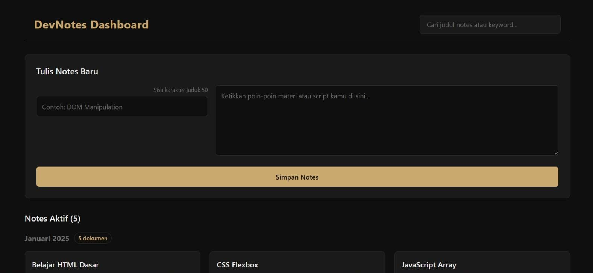
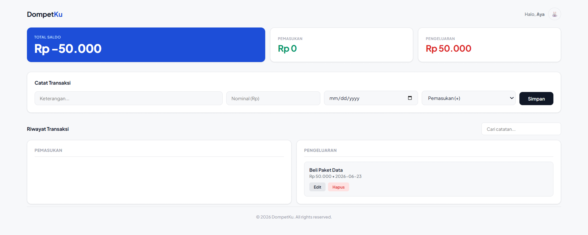
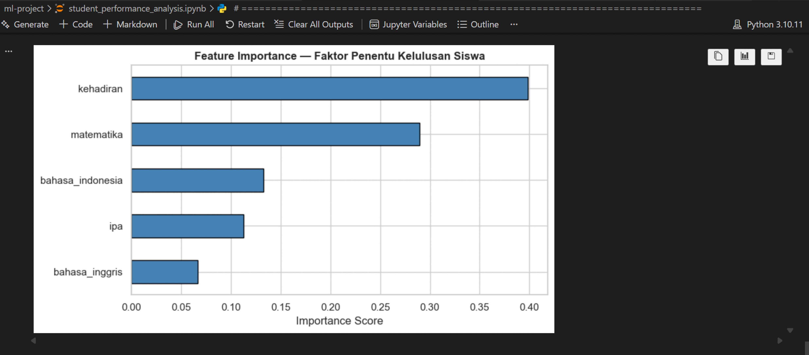

Butuh website
buat usaha lu?
Gue bikinin.
Halo, gue Aya. Gue bikin website simpel dan profesional buat toko, cafe, atau usaha kecil — biar makin gampang dicari dan dipercaya pelanggan.
Kenapa pilih gue?
Harga bersahabat. Cocok buat usaha kecil yang baru mau punya website, tanpa biaya bulanan yang bikin pusing.
Cepat & komunikatif. Progress dikabarin terus, revisi gampang, nggak perlu nunggu lama.
Lulusan bersertifikat. Coding Camp x DBS Foundation (Full-Stack Web Development) & IDCamp x Dicoding (AI Engineer), jadi bukan asal-asalan.
Pilihan paket
1 halaman — cocok buat cafe, toko, atau usaha jasa yang mau tampil profesional online. Ada info, menu/produk, kontak, dan lokasi.
Website dengan katalog produk, keranjang, dan proses checkout — biar pelanggan bisa pesan langsung dari HP.
Punya kebutuhan lain? Sistem pencatatan, dashboard, atau fitur khusus — cerita aja, gue bantu wujudin.
Beberapa yang udah pernah dibikin

Dashboard manajemen buat pelaku usaha kuliner (seller): estimasi omzet otomatis, tracking total transaksi, katalog produk per kategori, pencarian & filter menu, sampai fitur promosi otomatis pakai AI.

Aplikasi pencatatan dengan fitur pencarian, pengelompokan otomatis, dan tampilan yang enak dipakai sehari-hari.

Website buat catat pemasukan dan pengeluaran harian, tampilan gelap yang nyaman di mata, cocok dipakai buat usaha kecil ngatur kas.

Sistem yang bisa ngelompokin dan memprediksi data secara otomatis — contoh kalau usaha lu butuh analisis data pelanggan atau penjualan.